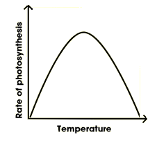
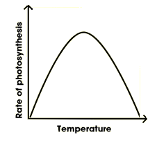
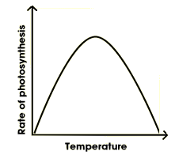

Three factors can limit the speed of photosynthesis: light intensity, carbon dioxide concentration and temperature.
1.Without enough light, a plant cannot photosynthesise very quickly, even if there is plenty of water and carbon dioxide. Increasing the light intensity will boost the speed of photosynthesis.
2.Sometimes photosynthesis is limited by the concentration of carbon dioxide in the air. Even if there is plenty of light, a plant cannot photosynthesise if there is insufficient carbon dioxide.
3.If it gets too cold, the rate of photosynthesis will decrease. Plants cannot photosynthesise if it gets too hot.If you plot the rate of photosynthesis against the levels of these three limiting factors, you get graphs like the ones below.In practice, any one of these factors could limit the rate of photosynthesis.
